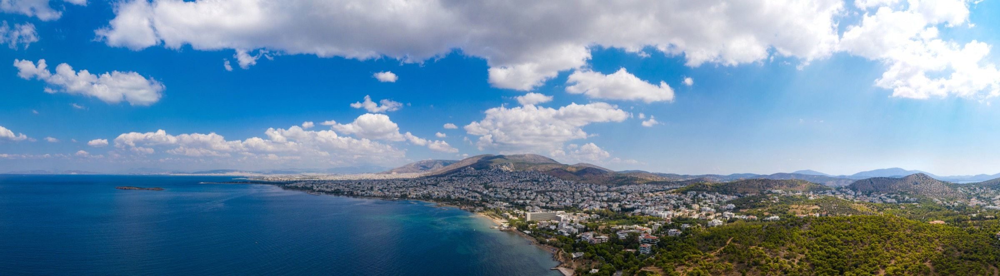
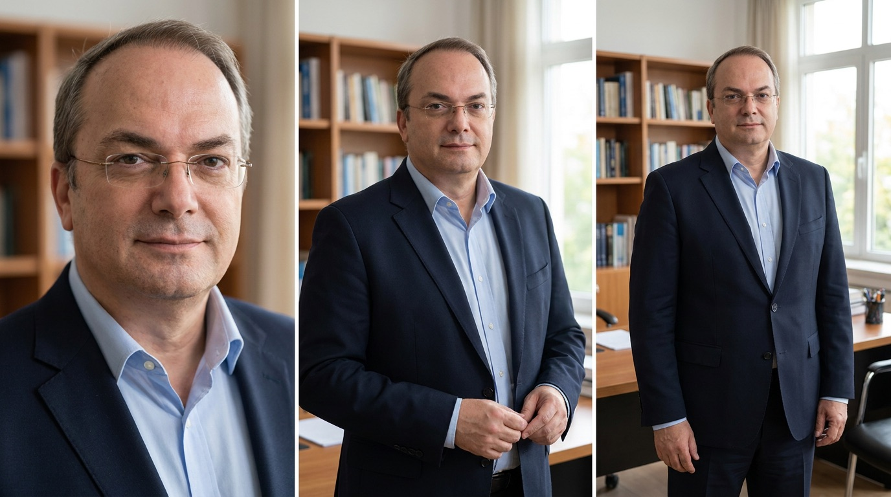
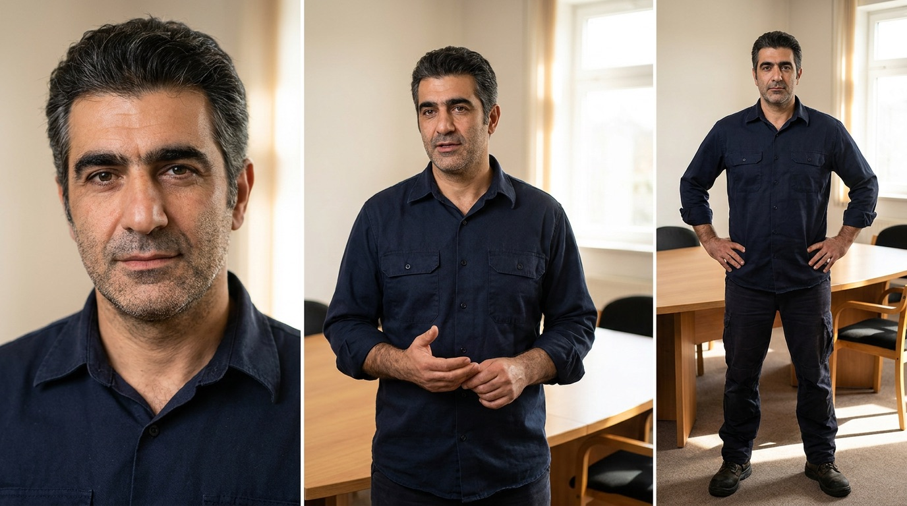
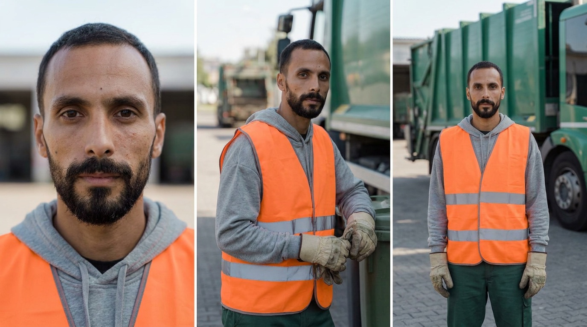
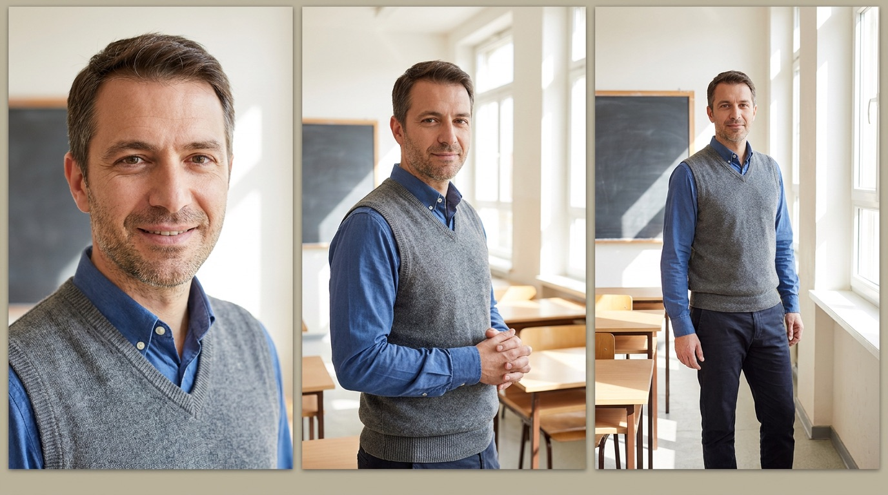
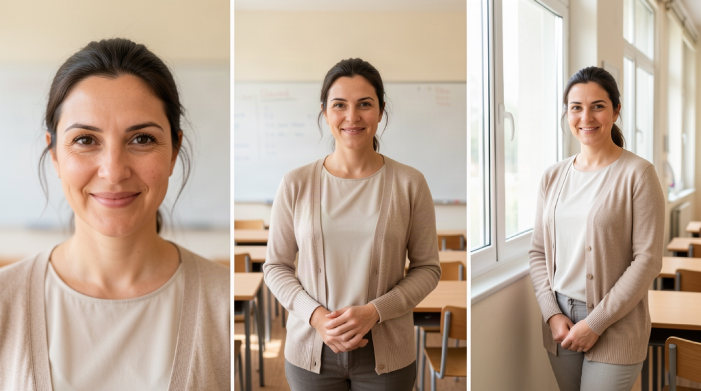

Δήμος Βάρης Βούλας Βουλιαγμένης (ο φορέας του έργου). EmDoT: ανάπτυξη και υποστήριξη της λύσης Dot.Waste. Telekom: ευθύνη υλοποίησης και ολοκλήρωσης.
Ταινία περίπου 5 λεπτών (UHD Format) και 3 cut versions (αναλογία 9:16) για χρήση σε social media.
Ο Δήμος αναζητεί μια τεχνολογικά πρωτοποριακή λύση ώστε να κάνει πιο παραγωγικό το χρόνο εργασίας των υπηρεσιών καθαριότητας. Ναι μεν πρόκειται για μια υπηρεσία που στο τέλος απολαμβάνει ο πολίτης, αλλά ουσιαστικά δεν βλέπει ν' αλλάζει κάτι στο περιβάλλον του άμεσα. Η πόλη είναι ήδη καθαρή. Αυτή είναι η ιδιαιτερότητα του έργου. Αυτό είναι η ταινία μας. Μια ματιά στα παρασκήνια.
Ο Δήμος χρειάζεται πληροφορίες: Ποιος κάδος είναι γεμάτος; Ποια διαδρομή να ακολουθήσουμε; Πού υπάρχει κάποιο τεχνικό πρόβλημα;
Πληροφορίες που εξοικονομούν χρόνο και χρήμα. Ώστε να λαμβάνονται οι σωστές αποφάσεις.
Σωστά δρομολόγια σημαίνουν λιγότερη κατανάλωση ενέργειας, λιγότερη συντήρηση στα οχήματα και τα εμπλεκόμενα μηχανήματα και μηχανοστάσια, καλύτερα ωράρια για τους εργαζόμενους υγείας.
Μια τέτοια λύση απαιτεί μια ικανή εταιρεία τεχνολογίας για να τη φέρει εις πέρας. Αισθητήρες σε κάδους, στη βροχή, στη ζέστη, στο κρύο. Κέντρο ελέγχου για παρακολούθηση και καταγραφή 24 ώρες το 24ωρο.
Έτσι εμφανίζεται το εργαστήριο της EmDot. Οθόνες υπολογιστών. Ηλεκτρονική συναρμολόγιση. Μηχανουργείο. (Σημ.: Δεν υπάρχουν τα λογότυπά της EmDoT κατά τη διάρκεια του φιλμ). Επεξηγούμε την πρόκληση, την πολυπλοκότητα, τη λύση, το επίτευγμα.
Ολοκληρώνουμε την αφήγησή μας με το αποτέλεσμα. Ο Εργαζόμενος, ο υπεύθυνος καθαριότητας και κάποιος εκπρόσωπος πολιτών που έζησαν το αποτέλεσμα ενός τέτοιου έργου. Καθαροί δρόμοι, καλύτερα ωράρια, εξοικονόμηση πόρων. Το βιωματικό τους ταξίδι, η δική τους οπτική γωνία.
Φωτισμένοι και καδραρισμένοι με τέτοιο τρόπο ώστε να επικεντρώνεται το μάτι του θεατή επάνω τους. Εκείνοι (ο καθένας ξεχωριστά), χαλαροί σαν κάποιος να τους παίρνει συνέντευξη, δεν κοιτούν κάμερα απευθείας. Αυτό θα ήταν περισσότερο σαν διάγγελμα παρά μια χαλαρή συζήτηση. Το ντύσιμό τους, business casual, κάνει αντίθεση με το λιτό φόντο. (π.χ. ανοιχτόχρωμο φόντο - σκουρόχρωμο ντύσιμο). Ήχος με ασύρματα μικρόφωνα πέτου μας φέρνει κοντά στον ομιλητή, νιώθουμε οικεία.
Όλη η ταινία "ντύνεται" με πλάνα από το δήμο (b-roll), τα σημεία του έργου και το εργαστήριο. Κάνοντας ακόμη πιο immersive την εμπειρία του θεατή. Οι ώρες που θα γίνουν τα εξωτερικά γυρίσματα θα πρέπει να είναι ή με το φρέσκο φως της ημέρας ή με το χρυσαφένιο της δύσης. Προσθέτοντας έτσι ένα επίπεδο συναισθηματικού βάθους που δεν συναντάς συχνά σε ένα εταιρικό φιλμ.
Ανάμεσα στις συνεντεύξεις μια ζεστή (ανδρική ή γυναικεία) φωνή συμπληρώνει το storyline μεταφέροντάς μας από ενότητα σε ενότητα με έξυπνο και διακριτικό τρόπο.
Η μουσική υπογραμμίζει τις 3 πράξεις της ταινίας. Χαλαρή εισαγωγή για την παρουσίαση της ανάγκης του δήμου. Τεχνολογικό ηχόχρωμα στην ανάπτυξη της λύσης. Αισιόδοξο κινηματογραφικό τελείωμα αφήνει μια δημιουργική νότα και την αίσθηση ότι κάτι μεγάλο γίνεται ακόμα κι αν δεν φαίνεται με την πρώτη ματιά.
Με αυτά τα στοιχεία και με την κάρτα των γραφιστικών που αποδίδει την υλοποίηση του έργου στο Δήμο, την EmDot και την Telekom, αφήνουμε ένα πολύ ηχηρό μήνυμα στο θεατή: Ένας Δήμος για τον πολίτη. Εγχώρια τεχνολογία. Εξελιγμένη διασύνδεση.
| Α/Α | Χρόνος | Διάρκ. | Είδος | Πρόσωπο | Τι συμβαίνει |
|---|---|---|---|---|---|
| 01 | 00:00-00:15 | 15΄΄ | ΑΦ | - | Άνοιγμα: παραλιακό μέτωπο, πόλη, αμαξοστάσιο. Φυσικός ήχος ανοίγει το βίντεο. |
| 02 | 00:15-00:34 | 19΄΄ | ΣΥΝ | Δήμαρχος | Ερ.1: ποια πόλη θέλετε να βιώνει ο πολίτης καθημερινά. |
| 03 | 00:34-00:42 | 8΄΄ | ΣΥΝ | Εκπρόσωπος / Δάσκαλος | Ερ.1: τι άλλαξε στην καθημερινότητα. |
| 04 | 00:42-00:58 | 16΄΄ | ΑΦ | - | Smart Waste σε επιχειρησιακή κλίμακα, αποκομιδή κατά πραγματική ανάγκη. |
| 05 | 00:58-01:10 | 12΄΄ | ΣΥΝ | Υπεύθυνος Καθαριότητας | Ερ.1: ποια πληροφορία έλειπε πριν το σύστημα. |
| 06 | 01:10-01:21 | 11΄΄ | ΣΥΝ | Εργαζόμενος αποκομιδής | Ερ.1: πώς ξεκινούσε η βάρδια παλιά και πώς σήμερα. |
| Α/Α | Χρόνος | Διάρκ. | Είδος | Πρόσωπο | Τι συμβαίνει |
|---|---|---|---|---|---|
| 07 | 01:21-01:44 | 23΄΄ | ΑΦ | - | 1.000 κάδοι σε λειτουργία, επέκταση σε 2.000. Supers κάδων. |
| 08 | 01:44-01:56 | 12΄΄ | ΣΥΝ | Υπεύθυνος | Ερ.2: τι ξέρει η υπηρεσία πριν στείλει το όχημα στον δρόμο. |
| 09 | 01:56-02:07 | 11΄΄ | ΣΥΝ | Εργαζόμενος | Ερ.2: ποια αλλαγή κάνει τη βάρδια πιο απλή ή ασφαλή. |
| 10 | 02:07-02:35 | 28΄΄ | ΑΦ | - | Dot.Waste, Dot.SmartBins, Dot.Weighing. Supers προϊόντων. |
| 11 | 02:35-02:55 | 20΄΄ | ΣΥΝ | Δήμαρχος | Ερ.2: από πιλοτική εφαρμογή σε σύστημα που λειτουργεί καθημερινά. |
| Α/Α | Χρόνος | Διάρκ. | Είδος | Πρόσωπο | Τι συμβαίνει |
|---|---|---|---|---|---|
| 12 | 02:55-03:08 | 13΄΄ | ΣΥΝ | Υπεύθυνος | Ερ.3: ποιο αποτέλεσμα δείχνει ότι αποδίδει. Super 25-30% λιγότερα χιλιόμετρα. |
| 13 | 03:08-03:25 | 17΄΄ | ΑΦ | - | 7 ρεύματα διαλογής, 50% εκτροπή από την ταφή. Supers αποτελεσμάτων. |
| 14 | 03:25-03:34 | 9΄΄ | ΣΥΝ | Εκπρόσωπος / Δάσκαλος | Ερ.2: τι αλλάζει στη γειτονιά όταν οι κάδοι μένουν καθαροί. |
| 15 | 03:34-03:44 | 10΄΄ | ΣΥΝ | Εργαζόμενος | Ερ.3: πώς καταλαβαίνεις ότι η δουλειά έγινε καλύτερα. |
| 16 | 03:44-04:00 | 16΄΄ | ΑΦ | - | PAYT: η χρέωση μπορεί να βασίζεται στο πραγματικό βάρος. |
| 17 | 04:00-04:31 | 31΄΄ | ΣΥΝ | Δήμαρχος | Ερ.3: τι μπορούν να κρατήσουν άλλες πόλεις. Κλείσιμο της ταινίας. |
| 18 | 04:31-04:49 | 18΄΄ | ΑΦ | - | Βαρκελώνη, Smart City Expo. Κυκλικό κλείσιμο όπως το άνοιγμα. |
| 19 | 04:49-04:55 | 6΄΄ | ΓΡΑΦ | - | End frame: λογότυπα Δήμου, EmDoT, Telekom. |
Αμαξοστάσιο, Δημαρχείο, πλατείες, παραλιακό μέτωπο. 4 setups, 11 απαντήσεις.
| Από | Έως | Τι γυρίζεται | Σκ. |
|---|---|---|---|
| 08:00 | 09:45 | Αμαξοστάσιο, Εργαζόμενος 3 απαντήσεις δίπλα στο όχημα. | 06, 09, 15 |
| 09:45 | 10:30 | Μετακίνηση και στήσιμο Δημαρχείου. | setup |
| 10:30 | 12:30 | Δήμαρχος, 3 απαντήσεις σε ένα setup. | 02, 11, 17 |
| 12:30 | 13:15 | Δήμαρχος με στελέχη, εκπαίδευση, cutaways. | 11 |
| 13:15 | 14:00 | Διάλειμμα. | - |
| 14:00 | 15:30 | Υπεύθυνος Καθαριότητας, 3 απαντήσεις. | 05, 08, 12 |
| 15:30 | 18:30 | B-roll απόγευμα, χρυσή ώρα στο τέλος. | 04, 13, 18 |
| 18:45 | 20:00 | Εκπρόσωπος κοινωνίας πολιτών, 2 απαντήσεις. | 03, 14 |
Αμαξοστάσιο, δρομολόγιο, EmDoT, πλατείες, παραλιακό. Λειτουργία και τεχνολογία το πρωί.
| Από | Έως | Τι γυρίζεται | Σκ. |
|---|---|---|---|
| 07:00 | 08:00 | Αμαξοστάσιο πριν τη βάρδια, φυσικός ήχος, ΜΑΠ. | 01 |
| 08:00 | 10:30 | Πραγματικό δρομολόγιο αποκομιδής, κάδοι, πλοήγηση. | 04, 07, 09, 16 |
| 10:30 | 12:30 | Παραγωγικός χώρος EmDoT, συναρμολόγηση. | 10 |
| 12:30 | 13:15 | Διάλειμμα και μετακίνηση. | - |
| 13:15 | 15:00 | EmDoT συνέχεια, εγκατάσταση σε σταθμευμένο όχημα. | 10 |
| 15:00 | 19:00 | B-roll απόγευμα, πλατείες, παραλιακό, κυκλικό κλείσιμο. | 04, 13, 18 |
| Πρόσωπο | Πραγματικός χώρος | Σκηνές | Θερμοκρασία |
|---|---|---|---|
| Δήμαρχος | Αίθουσα Δημοτικού Συμβουλίου, Δημαρχείο (Λ. Κ. Καραμανλή 18, Βούλα) | 02, 11, 17 | 4400 K |
| Υπεύθυνος Καθαριότητας | Χώρος επιχειρησιακής σύσκεψης υπηρεσίας, Δημαρχείο (οθόνη με ήρεμο χάρτη) | 05, 08, 12 | 4700 K |
| Δάσκαλος (Εκπρόσωπος) | 2ο Δημοτικό Σχολείο Βούλας (Ασκληπιού & Πλαπούτα 7, Βούλα) | 03, 14 | 5600 K |
| Εργαζόμενος αποκομιδής | Αμαξοστάσιο / στόλος οχημάτων καθαριότητας του Δήμου | 06, 09, 15 | 4700-5000 K |
Ιδανικά να γίνει ρεπεράζ 1-2 ημέρες πριν το γύρισμα, για να κλειδώσουν οι τελικές τοποθεσίες.
| Ζώνη | Σημείο | Είδος | Φως | Σκηνές |
|---|---|---|---|---|
| Δημαρχείο | Θεσμικός χώρος (Δήμαρχος) | ΕΣΩΤ | Όποια ώρα | 02, 11, 17 |
| Δημαρχείο | Αίθουσα συσκέψεων (Υπεύθυνος) | ΕΣΩΤ | Όποια ώρα | 05, 08, 12 |
| Αμαξοστάσιο | Αμαξοστάσιο καθαριότητας | ΕΞΩΤ | Πρωί, πριν τη βάρδια | 01, 06, 09, 15 |
| Αστικός κορμός | Πλατεία Ιμίων & Λεωφ. Βασιλέως Παύλου | ΕΞΩΤ | Απόγευμα | 04, 13 |
| Αστικός κορμός | Πλατεία Νυμφών | ΕΞΩΤ | Απόγευμα | 04, 13 |
| Αστικός κορμός | Κεντρική Πλατεία Βάρκιζας | ΕΞΩΤ | Απόγευμα | 04, 13 |
| Αστικός κορμός | Δρόμος, πραγματικό δρομολόγιο | ΕΞΩΤ | Πρωί, δρομολόγιο | 04, 07, 09, 16 |
| Παραλιακό μέτωπο | Παραλιακό μέτωπο Βουλιαγμένης | ΕΞΩΤ | Απόγευμα και δύση | 01, 18 |
| Παραλιακό μέτωπο | Παραλία Δημαρχείου, Βούλα | ΕΞΩΤ | Απόγευμα | 01, 03 |
| EmDoT | Παραγωγικός χώρος EmDoT | ΕΣΩΤ | Όποια ώρα | 10 |
| EmDoT | Αυλή με σταθμευμένο όχημα | ΕΞΩΤ | Μεσημέρι | 07, 10 |
Χώρος. Κριτήριο για την επιλογή χώρου είναι το τι κάνει πίσω από τον άνθρωπο που μιλά. Θέλουμε καθαρό φόντο, χωρίς ακαταστασία και χωρίς πολλά αντικείμενα. Ο φωτισμός ομοιόμορφος και φωτεινός, χωρίς περίεργες σκιές και χωρίς παράθυρο πίσω από τον ομιλητή. Ο χώρος να ενισχύει την αισιοδοξία: καθαρές γραμμές, φωτεινά υλικά, ζεστές αποχρώσεις, ένα ανθρώπινο εργασιακό περιβάλλον. Ιδανικά να δημιουργεί αντίθεση με τον συνεντευξιαζόμενο, ώστε να ξεχωρίζει: σε σκούρο χώρο ανοιχτόχρωμα ρούχα, σε φωτεινό χώρο πιο σκούρα. Ο άνθρωπος στο επίκεντρο.
Ενδυματολογία. Απλές μονόχρωμες παλέτες, καλά σιδερωμένες, χωρίς λογότυπα και χωρίς έντονα χρώματα. Καθένας φέρνει δύο επιλογές, ώστε να διαλέξουμε πάνω στον χώρο. Χωρίς ψιλά σχέδια, ρίγες, καρό ή πουά. Χωρίς αλλαγή ρούχων ανάμεσα στις λήψεις.
Καθαριότητα. Ό,τι φαίνεται στο κάδρο είναι καθαρό την ώρα του γυρίσματος. Οι κάδοι καλά κλειστοί, σκουπισμένοι εξωτερικά, χωρίς σκουπίδια γύρω τους. Τα οχήματα πλυμένα, χωρίς λάδια, σκόνη ή ζημιές. Το συνεργείο φοράει όλα τα προβλεπόμενα, κράνη, γάντια, γιλέκα, καθαρά και πλήρη. Ο χώρος καθαρός, χωρίς κιβώτια, καλώδια, σκούπες ή προσωπικά αντικείμενα στο φόντο. Ο Δήμος δεσμεύεται ότι οχήματα και κάδοι θα πλυθούν την προηγούμενη μέρα.
Ήχος. Ο χώρος ήσυχος, μακριά από δρόμο, κλιματιστικά, ψυγεία και ανεμιστήρες. Την ώρα της λήψης κλείνουν τα κλιματιστικά και τα κινητά σιωπηλά.
Σταθερότητα ανάμεσα στις συνεντεύξεις. Για να μπουν όλες οι απαντήσεις στην ίδια ταινία, κρατάμε ίδια απόσταση από τον ομιλητή, μηχανή στο ύψος των ματιών, και όσο το δυνατόν σε παρόμοιο φωτισμό. Το βασικό βίντεο είναι 16:9, αλλά φροντίζουμε από το γύρισμα να κόβεται εύκολα σε 9:16: ο άνθρωπος στο κέντρο του κάδρου, τίποτα σημαντικό στις άκρες.
Ο άνθρωπος μπροστά στην κάμερα. Πριν γυρίσουμε, εξηγούμε ότι δεν υπάρχει σωστό και λάθος, ότι δεν διαβάζει κείμενο, και ότι θέλουμε τα λόγια με τον δικό του τρόπο. Μια μικρή παύση πριν από κάθε απάντηση δίνει ανάσα στην εικόνα. Στην απάντηση περιλαμβάνεται η ερώτηση, ώστε να στέκει μόνη της μέσα στην ταινία. Παράδειγμα:
Ερώτηση: Τι άλλαξε για τη γειτονιά;
Απάντηση που δεν στέκει: Είναι πιο καθαρά.
Απάντηση που θέλουμε: Για τη γειτονιά, αυτό που άλλαξε είναι ότι ο δρόμος μένει καθαρός όλη μέρα, γιατί πάμε στους κάδους πριν γεμίσουν.
Τι δεν μπαίνει στο κάδρο. Λογότυπα άλλων εταιριών, πινακίδες οχημάτων, στοιχεία πολιτών και προσωπικά δεδομένα σε οθόνες. Τα λογότυπα Δήμου, EmDoT και Telekom μπαίνουν μόνο με έγκριση του πελάτη.
Τοποθεσίες, άμεσα. Ο Δήμος να προτείνει το συντομότερο τα σημεία γυρίσματος και τις εξωτερικές λήψεις, ώστε να κλειδώσουν το πρόγραμμα και το ρεπεράζ. Χωρίς αυτά το πρόγραμμα μένει ανοιχτό. Για τις συνεντεύξεις προτείνουμε το δημαρχείο, σε αίθουσα με καθαρό φόντο, ή κάποιο κτήριο της περιοχής με ιδιαίτερο αρχιτεκτονικό ενδιαφέρον.
Άνθρωπος επαφής. Ένα πρόσωπο, με όνομα, κινητό και email, που συντονίζει τα πάντα πριν και κατά τη διάρκεια των γυρισμάτων.
Πρόσωπα στην κάμερα. Ονόματα και ιδιότητες των τεσσάρων ομιλητών, με σωστή ορθογραφία, για τα ονόματα στην εικόνα.
Έγκριση ερωτήσεων. Ο Δήμος να εγκρίνει τις ερωτήσεις, ώστε οι ομιλητές να τις ξέρουν από πριν.
Άδειες. Να δοθούν όλες οι απαραίτητες άδειες.
Απορριμματοφόρο και συνεργείο. Ένα όχημα με δύο έως τέσσερα άτομα, σε συγκεκριμένη ώρα και δρομολόγιο, για τις λήψεις αποκομιδής.
Λογότυπα. Τα επίσημα λογότυπα του Δήμου σε υψηλή ανάλυση, για το τέλος του βίντεο.
Ενημέρωση πολιτών. Γραπτή ενημέρωση καταστημάτων και κατοίκων στους δρόμους που θα γυρίσουν.
Την ημέρα του γυρίσματος. Ο άνθρωπος επαφής παρών όλη τη διάρκεια. Κάθε ομιλητής στο σημείο μία ώρα νωρίτερα από τη λήψη του.
Ρεπεράζ με τον Δήμο. Προαιρετικό: ρεπεράζ μαζί με άνθρωπο του Δήμου για το κλείδωμα τοποθεσιών, ωρών και φωτός.




